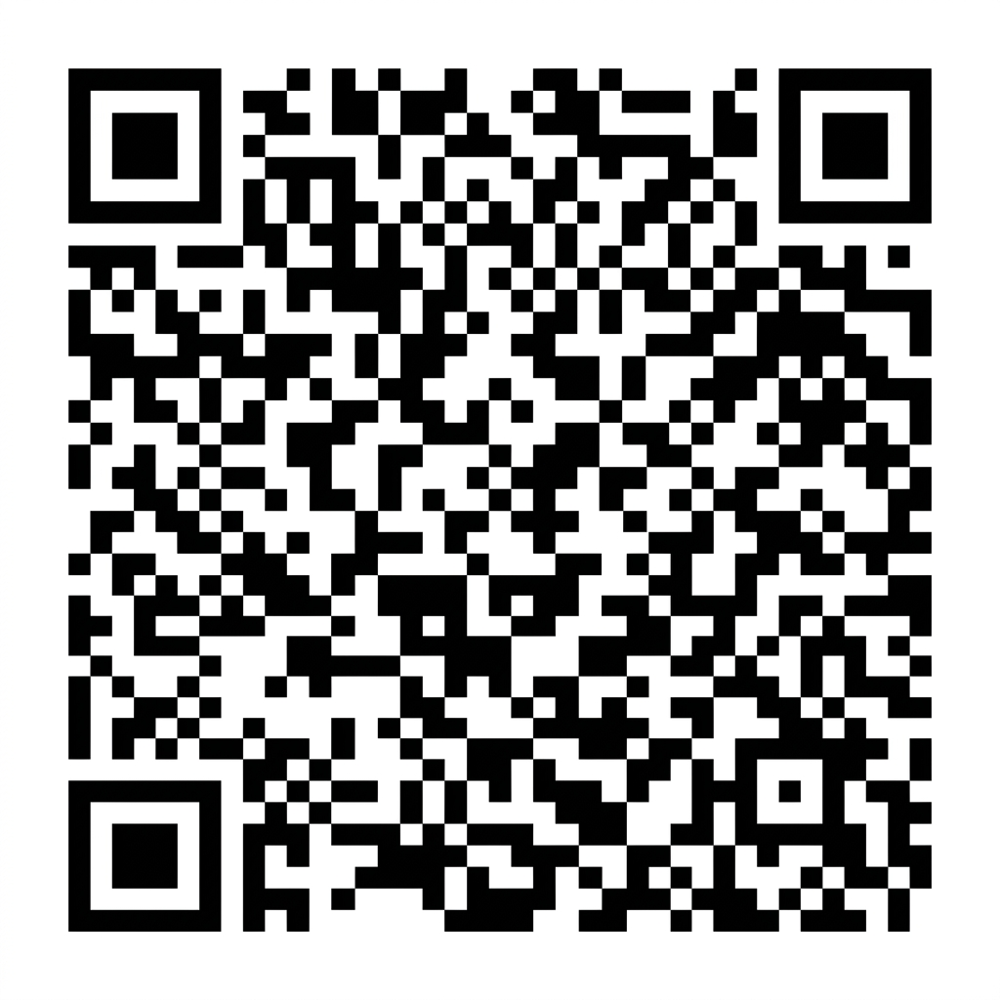

What is a QR Code Generator?
A QR Code Generator is a digital tool that converts plain text, website links, contact information, email details, or network passwords into a Quick Response (QR) code. These codes are two-dimensional barcodes consisting of black squares arranged on a grid over a white background. Because smartphones can scan these codes directly via their built-in camera apps, QR codes have become the ultimate bridge between physical media and digital assets.
When searching for the best free qr code generator online, users frequently encounter platforms that lock high-resolution downloads behind expensive paywalls or print ugly logos (watermarks) right in the center of the code. ToolNest resolves this problem. Our platform offers a premium, free qr code generator without watermark so that your digital identity remains clean, professional, and entirely your own. Whether you are generating a link for a marketing brochure or setting up a menu for a restaurant, our utility renders pristine, scan-ready vector barcodes instantly.
How to Create a QR Code for Website (Step-by-Step Guide)
If you are wondering how to create qr code for website portals or online landing pages, the process is incredibly straightforward and takes less than ten seconds. Follow these easy steps to get started:
- Copy Your Website URL: Open your browser tab, go to your website, and copy the full URL (including the
http://orhttps://protocol prefix). - Input the Link: Paste the copied link into the "Text or URL" input field at the top of this page.
- Generate the Code: Click the "Generate QR Code" button. The tool immediately translates the alphanumeric characters into an optimized 2D matrix.
- Download PNG Image: Press the "Download PNG" button to export a high-resolution transparent image file directly to your computer or mobile device.
Once downloaded, you can import this file into design software like Figma, Canva, or Photoshop, and overlay it onto flyers, posters, email signatures, or banners without losing image clarity.
QR Code Generator for WiFi, URL, and Payments
While web links are the most common application, our tool supports multiple complex configurations. In today's contactless economy, dynamic text patterns allow you to control devices, trigger transactions, or configure connections instantly upon scanning.
WiFi QR Code Generator
Tired of spelling out complicated, case-sensitive router passwords to guests? You can use our **qr code generator for wifi password** setups. By leveraging standard system parameters, a single scan can prompt iOS and Android devices to join a secure network automatically.
To do this, format your input text as follows:
WIFI:S:YourNetworkName;T:WPA;P:YourPassword;;
Replace YourNetworkName with your SSID and YourPassword with your actual key. Make sure to maintain the semicolon structure. When someone scans the generated code, their phone will show a button saying "Join Network."
Universal URL Mapping
Use this tool to generate redirect points for your online platforms. From portfolios and YouTube videos to Google Maps coordinates and digital menus, you can map any web destination securely. If you need to manipulate URLs beforehand, you can also use our URL Encoder Decoder to format query parameters correctly.
Contactless Payment Integrations
Setting up payment links is simpler than ever. Paste your custom UPI, PayPal, or crypto wallet address format directly into our generator. Customers can scan the graphic to launch their favorite digital wallet and make instant transfers. This touchless structure is fast, secure, and doesn't require card readers.
Best Free QR Code Generator Without Login
Most online tools ask for your email address, demand a credit card, or force you through sign-up screens before they let you download your file. We believe utilities should be accessible and frictionless. ToolNest provides a qr code generator no login required.
This approach means:
- No email newsletters or spam campaigns hitting your inbox.
- No trial periods that expire after a week or change your active links.
- No tracking cookies or profile building. We prioritize absolute anonymity.
How to Download QR Code as PNG
Many online tools export codes in low-resolution JPEG format, which becomes pixelated and unscannable when scaled up. For printing on banners, merchandise, and business cards, using a lossless format is essential. That is why our platform is built as a **qr code generator with download png** capabilities.
PNG (Portable Network Graphics) is a raster-graphics file format that supports lossless data compression and background transparency. When you download a PNG, the background blocks remain fully transparent, allowing you to seamlessly overlay the black barcode blocks onto colored backgrounds, textures, or paper graphics without ugly white borders. To adjust image properties before embedding, you can pair this generator with our Image Resizer to resize your graphic to precise pixel boundaries.
Key Use Cases for QR Codes
Modern workflows utilize QR codes to streamline interactions across various industries:
1. Business Cards (vCard Integration)
Make your contact details instantly downloadable by using our **qr code generator for business card** prints. You can encode contact information in a vCard template directly into the generator so that when scanned, the recipient's phone instantly prompts them to save you as a contact.
2. WiFi Credentials Sharing
Perfect for office lobbies, cafes, hotels, and residential homes. Mount a framed print of the barcode on the wall so that guests don't have to search for network details or type passwords manually.
3. Academic and School Use
Teachers can print codes on worksheets to link students directly to educational videos, references, or online quizzes. Students can attach codes to project posters, leading reviewers to digital portfolios, slides, or interactive reports.
4. Product Packaging and Marketing
Direct buyers to instruction manuals, warranty registration portals, or special discount vouchers. A QR code saves valuable physical package space while delivering unlimited rich media online.
Features of ToolNest's Free Online QR Code Maker
- No Watermarks: The generated graphic is entirely clean. We never insert branding or logo overlays.
- No Sign-up or Accounts: Access all features instantly. There is no paywall or trial limitation.
- Lossless PNG Format: High-resolution export that maintains razor-sharp clarity for high-end printing.
- Browser-Based Processing: 100% private. Your text input is processed locally within your browser context.
- Strict Standard Compliance: Generated codes are formatted according to international barcode standards, ensuring high scanner compatibility.
Security & Privacy First
We respect your privacy. Unlike competitive tools that log your URLs, track your users, or redirect your traffic, our system operates completely transparently. The Javascript library runs inside your local browser sandbox to paint the matrix elements on a HTML5 canvas. If you need to generate strong, unique passwords to share securely via QR code, try our utility for Password Generator to generate safe keys beforehand.
Frequently Asked Questions
WIFI:S:YourSSID;T:WPA;P:YourPassword;; (replace YourSSID with your network name and YourPassword with the password). Paste this in the input field above, click Generate, and download your free PNG.